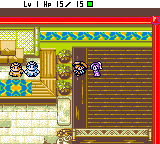
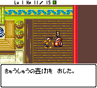
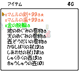
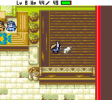

◆ 秘传心法 ◆
|
◆ 秘剑入手法 ◆
| 旅の神クロン的祝福道具 |
入手地点 |
| ひだまりの剑 |
魔城大天守阁最上层 |
| けしんの盾 |
魔城东小天守最上层 |
| んふうの腕轮 |
魔城东小天守最上层 |
| カランバの矢 |
魔城东小天守最上层 |
| ブフ―のおにぎり |
魔城大天守阁最上层 |
| ランザンの草 |
魔城大天守阁最上层 |
| スメラギの卷物 |
魔城东小天守最上层 |
| デンジンの杖 |
魔城东小天守最上层 |
| ギメンシャの壶 |
魔城大天守阁最上层 |
【解说】：在小天守和大天守阁最上层把任意道具放入变化之壶就能变出受旅の神クロン祝福的道具，种类随机，不过单人游戏最多只能得到其中的7个，其余2个要跟其他人交换才能得到。当得到全部9个后，到ジャハンナムの扉迷宫的最深处，9个道具会发生共鸣，从而得到强劲的武器秘剑カプラステギ。其实细心的玩友应该发现，这9个道具的第1个假名拼起来正是秘剑カプラステギ的意思。
◆ 『煅冶屋のかまど』迷宫出现条件 ◆
煅冶屋のかまど是游戏中的隐藏迷宫，出现还必须满足一定条件，用GBA玩和用GBC玩的条件是不同的。
����①用GBA玩的场合：首先必须爆机一遍，而且让マ―モ成为同伴（只要去煅冶屋2次就行了），这样，在不带同伴的状态下去煅冶屋，就会发生剧情出现迷宫。
����②用GBC玩的场合：除了满足爆机一遍和让マ―モ成为同伴这2个条件外，还必须满足游戏次数达到100回目和成功救助别人10次以上这2个条件迷宫才会出现。
◆ 关于一些不思议的咒文 ◆
����①无限回复之剑：只要在训练屋输入「さいあきかああいぐ」再选择“前とおなじに”指令就可无限得到回复之剑。
����②迷之救助：在游戏中，壶之洞窟这个迷宫是不允许被救助的，但是在助屋输入「はぷすめめをそむるむあおけ」的求助咒文却可以前往壶之洞窟进行救助，大家可以试试。
◆ 机器人ゼンマイガ―改造法 ◆
| 改造后的名称 |
改造所必须的到达层数 |
| フウリョクオ― |
5F以上 |
| スイリョクカ― |
10F以上 |
| カリョク―ン |
15F以上 |
| ジョウキマックス |
20F以上 |
| ディ―ゼルエ―ス |
30F以上 |
| メガソ―ラ― |
40F以上 |
| リニアショ―ゲン |
50F以上 |
| ハイブリッダ―Z |
70F以上 |
����【解说】：机器人ゼンマイガ―视其战绩可到人形屋进行多次改造，从而获得更高的战斗力，条件是必须带它到达一定层数并且能平安返回村庄。偶个人认为改造这个破机器人没有太大的意义，因为一旦其死亡后到人形屋只能取回未改造前的，之前的心血就白费了。另外，机器人死亡后再去人形屋购买时名字后面会加上2号、3号，最高是99号。
◆ 同伴ンフ―的特技推荐 ◆
����同伴ンフ―是所有同伴中最强的，它可以吃下怪物肉并学会该怪物的特技，但并不是所有的特技都能学会，查看ンフ―的特技状态栏如果怪物名后面没有「のとくぎ」的字样，则该怪物的特技不能被ンフ―学会。特技最多可以学会10种，超过10种时旧的就会忘掉。很多风来人都认为，让ンフ―领悟的特技越多战斗时就越有利，其实这是非常错误的！ンフ―学会的特技越多，随机连续发出同一种的几率就越低，可能等半天也等不到你想发的那种强力特技，这是最为恼人的！因此，偶建议让ンフ―学会4种特技就足够了，必要的4种肉分别是きゅうめいウサギの肉、ア―クドラゴンの肉、オドロの肉、ハイパ�`ゲイズの肉、イカエンペラ�`の肉和ヒャクメまじん。其中第1种回复HP，第2种给予敌40点伤害（远程有利），第3种令敌攻防降为0（近身有利），第4种近身时令敌单体向后攻击，最后2种令敌全体失明状态和混乱状态，遇上大部屋型怪物房间时更显奇效！这样，ンフ―发动攻击特技时便有五分之一几率使出其中1种强力特技，战斗效能大大增强！
◆ 『天下一�F道会』游戏初期升级秘法 ◆
天下一�F道会迷宫游戏初期某些层可以设定召唤器这个机关，利用它再配合回转板和地雷的协力就能使出快速升级秘法。这里以3F为例，具体方法如下：先找一间较小且只连接一条窄道的房间，然后到房间尽头面对着窄道且贴墙的那一格地板设置召唤器（关键的一步，起导火索的作用），跟着随意在附近分散地设置2～3个召唤器，再在召唤器的空隙中加入6～7个回转板（特别是房间出口处一定要设定一个），最后在出口处的窄道中设置2个地雷。よし、升级SHOW拉开序幕。首先站在窄道内将一垃圾道具向贴墙的召唤器投掷启动�F效果，可看到4个怪物被召唤出来，而这些怪物又踏中其他的召唤器唤出更多的怪物，不少怪物踏中了回转板进入混乱状态而胡乱攻击。啊，有人升级了，哇，又升了！看，那个LV3的家伙跑出来了。“轰”！好壮观的蘑菇云，西林坐飞机了！从LV4～5狂窜至LV17！噢，又一个不怕死的出来了，嘿嘿，这次升到LV22了。怎么样，爽疯了吧？这为以后的冒险打下了坚实的基础。
����【补充说明】：�F虽然对浮空系怪物无效，但只要装备「あたらずの腕��」，等浮空系怪物走到�F上时再向其投掷任意道具就可令�F发动效果。
◆ 无限祝福法（仓库版） ◆
����受过祝福的卷物一般都可以使用至少2次，如果某个受祝福的卷物能够使用3次的话，那么使用一次后它的祝福状态还不会消失，在仓库使用1次后出来再进去就能还原它使用3次的状态，所以用此法可以无限使用祝福状态的卷物，比较有价值的是使用天惠卷物、地惠卷物和壶增大卷物（使用这些卷物前一定要装备武器和盾，否则卷物的祝福状态会一下子消失。），但是可用3次的祝福卷物不太好找，其实就算是普通的卷物，只要用祝福之壶祝福2次就可以了。
����【补充说明】：其实用此法也并不能保证卷物会永远保持祝福状态，有时用3、4次后祝福状态就消失了，有个方法可以降低祝福状态的消失几率，那就是在存放祝福道具时，要直接放到那片塌塌米地板上，而不要与仓库番人对话来存放。另一点便是在使用祝福道具时最好站在道具上使用。
◆ 真・无限祝福法（仓库版） ◆
����上面所说的无限祝福法只局限于卷物，而且每使用一次就要进出仓库一次，还要再装备一次武器和盾，当卷物的祝福状态不幸消失时还要找祝福之壶来祝福，不仅麻烦而且速度极慢。经过偶潜心的修炼，终于发掘出真正的仓库版无限祝福法！运用此法不仅可以一次性将装备强化至极限，还可以将所有道具无限祝福而且不用反复进出仓库！！！本来偶是不想公开这个秘法的，但是看在b_wing君、qianlc君和赤色彗星兄他们手中那3把菜刀（ブフ�`の包丁）的份上（搁在偶的脖子上），再加上彗星兄的善意劝告：“你再不说出来，马上就会有「kenyoの肉」这种新道具出现了！”，偶就打算招了。谁知得意忘形的qianlc在一旁乱语：“吃了「kenyoの肉」，不仅可以青春常驻，延年益寿，而且还有增强五成功力的奇效，实在是风来人不可多得的补品！”b_wing补充（面向镜头）：“这么珍贵的补品我们只卖＄99/500g，女士更有特别优惠，送kenyo限定版写真集一本，手快有手慢无！”偶狂吐血，失去知觉中……
����当偶醒来后，在3把菜刀的挥舞下含泪写出了这个秘法……T_T
����本秘法操作具体步骤如下：
����①.首先收集齐全必要的道具：吸收之壶、壶增大卷物、かなしばりの杖和しゅくふくカズラの肉（说明：壶增大卷物最好收集2个以上，原因我不多说了；另外しゅくふくカズラの肉比较难直接入手，所以这里改用ウツボカズラの肉和しあわせの杖来代替，只要带把菜刀去ジャハンナムの扉6F杀死ウツボカズラ就能得到ウツボカズラの肉了）；辅助强化道具：天惠卷物和地惠卷物（如果你想强化装备的话）；无限祝福回收辅助道具：魂之镰和ブフ�`の包丁（若有ブフ―の杖就最好）。
����②.一切准备工作就绪后，带除マ―モ和ンフ―的其他NPC到仓库中，偶选择了お�o小姐。既然约了MM来谈心，二人世界当然要“清场”了，将那块塌塌米地板上存放的所有道具转存到仓库番人处或者带在身上，完成清场步骤。（清场的用处想必大家都明白的，偶就不多说了）
����お�o「今晚的月亮好美啊！我要你陪我聊到天亮。」
����西林（晕…）「当然可以啦，不过我觉得今晚的你比月亮更美！」
����③.将お�o带到那片塌塌米地板上，对お�o投掷ウツボカズラの肉，再用しあわせの杖将ウツボカズラ进化至LV3的しゅくふくカズラ，接着使用かなしばりの杖令其不能行动。好了，拿出吸收之壶狠命地吸收其特技吧（对同一个怪物可以无限次吸收），然后将想要祝福的道具放到地上，站在上面使用特技将道具祝福，吸收之壶使用次数不够时用壶增大卷物来补充（记得祝福啊），如此反复，仓库内所有道具都可以轻易变为祝福状态――甚至连壶也可以――虽然这样是毫无意义的……
����④.无限祝福完成后，别随便就杀掉しゅくふくカズラ，首先解除武器将其HP打至很少，接着装备魂之镰使其HP减为1，OK，摸出菜刀狂砍，しゅくふくカズラの肉回收成功！这样下次需要祝福道具时就不用再去收集肉了（若有ブフ―の杖就不用这么麻烦了）。
|  |
 |
| ▲和MM聊天首先要清场 |
▲无限祝福SHOW启幕 |
|  |
 |
| ▲连祝福之壶也被祝福了 |
▲最后别忘了回收肉 |
◆ 无限祝福法（奈落版） ◆
����本秘法是“仓库版真无限祝福法”的实战版，具体方法如下：
����奈落の果て迷宫的30～32F和50～52F有时会遇上しゅくふくカズラ这个怪物（若有しあわせの杖，也可对しきべつカズラ使用令其升级），只要身上持有吸收之壶和壶增大卷物，无限祝福法则使用可能！首先对しゅくふくカズラ使用かなしばりの杖令其不能行动，再用吸收之壶狠命地吸收其特技，然后将想要祝福的道具放到地上，站在上面使用特技将道具祝福，吸收之壶使用次数不够时用壶增大卷物来补充，如此反复，身上所有道具都可以轻易变为祝福状态了。此外，若有天惠卷物和地惠卷物的话，装备更可强化至极限！很多风来人在打至60～80F便含冤而去，很大程度上是不会用无限祝福法所致，呵呵。（Tips：最好在到达50F前将所需要的道具收集齐全，以达成最佳的无限祝福效果，为以后的冒险巩固基础）
����【补充说明】：在50～52F若身上持有しあわせの杖，配合无限祝福法使用时运气好的话更可令LV升至99！！！因为这3层出现的隐形怪物ホルムデ�`モン拥有反射魔法的特殊能力，使用よくみえの腕轮或者目药草就可看到它了，对它使用しあわせの杖，LV狂升！！！若无以上2个道具时也可靠装备中合成的反击能力来判断ホルムデ�`モン的位置。
◆ 剑盾数值变2倍的BUG大法 ◆
����本秘法适用于トンファンの穴和奈落の果て迷宫，具体方法如下：
����首先必须保证持有弓箭和怪物肉（或者是已吸取特技的吸收之壶），装备剑、盾和弓箭之后吃肉变身（吸收之壶时使用特技变身），解除变身后将弓箭放置地上，这时可以发现剑盾数值已变为2倍了，这种状态可以持续保持，不过再吃下怪物肉时会回复，再次装备弓箭、剑、盾和腕轮时也会回复。使用这个秘法后对突破トンファンの穴99F非常有利。
◆ 风来人番付的番付点数计算法则 ◆
����终于搞到了风来人番付的番付点数计算法则的情报了，基本规律如下：
����身上道具的总卖价每1G＝1点，注意这里的卖价指的是将道具卖给商店时的价格；另一个重要的影响因素是杀敌数，每杀一个得64点（高分数＝杀人狂魔？）；到达层数每增1层分数值增128点；所用时间每增1分（不足1分按1分计）减64点；所用回合数每增1回合减4点；LV每提升1级分数值减128点；持金数1G＝1点；接受救助时分数值减半。此外最大力量值，不装备剑盾，不带道具等等对分数值也有影响（应该可以增加好几万的说），但是提供情报的那个日本人说忘记了影响的数值……-_-b……所以这里将这些因素影响的数值统称为额外附加数值。此外是否还有其他的影响因素就不得而知了（例如偷盗成功次数等），希望高人能指点修正。
����综上所述，归纳出风来人番付的番付点数近似计算法则为：
����番付点数≈持金数＋身上道具总卖价＋杀敌数×64＋到达层数×128－游戏时间（分）×64－LV×128－回合数×4±额外附加数值
����从上面的法则可以看出，如果要想获得高番付点数，必须最大限度提升身上道具的“总价值”，多杀敌，收集充足的金钱，并且尽量减少所用的时间和回合数，尽量以低LV破关。其实上面的计算法则还没有说到行动数的影响，当然是行动数越少分数值越高啦，但由于我也不知道影响的计算方法，所以也就没有加入到番付法则中。行动数这个概念可能大家比较陌生，所以下面详细地给大家解释一下（注：这是引用了SFC版的计算方法，GB2中应该有改动）。基本上西林的移动、攻击、使用道具等等均要消费行动数，从一进入该层迷宫就开始计算。一般地每移动一步、攻击、按B键看状态、使用道具都是消费行动数1；按住A+B键每回合消费行动数2，将身上的道具与地上的交换也是消费行动数2；给未识别的道具起名消费行动数11。行动数消费累计达1920时开始吹第1次风，累计达2000时吹第2次风，累计达2080时吹第3次风，之后……大侠你从头来过……。要注意的是不要将行动数和回合数混淆，在1回合内可以消费N多的行动数，例如1回合内给N个未识别道具起名会消费（11N+1）的行动数。
����Tips：若想在短时间内快速提升杀敌数，最好的方法就是不断使用祝福状态的モンスタ―の卷物来增加敌人，不过身上的装备一定要够强，不然被KO的就是你啦！
◆ 印2倍的装备附有无法消除的负面能力时的消除方法
◆
����只有通过救助才能入手的的印2倍装备，通常入手时都会附加1～2种在煅冶屋无法打消的负面能力，这时可以利用合成来消除。一般地，主合成道具的合成界限比副合成道具的合成界限少的场合，合成时主合成道具将会随机继承副合成道具的能力。强烈建议在合成前先将副合成道具的能力合成至界限以提高消除成功率。例如得到了印2倍的武器的话可以将サトリのつるはし（合成数为1）作为主合成道具；而印2倍的盾就更简单了，只要将サトリの盾（合成数为0）作为主合成道具即可100%消除，然后合到其他想要的盾里面到煅冶屋打消サトリの盾的能力即可。印2倍的腕轮可以合到大多数印界限为2的腕轮里面随机消除负面能力，就算不成功也不要紧，由于在仓库内是不会自动记录的，因此可切断电源重新再试。
◆ 救助入手装备附有无法消除的负面能力时的消除方法 ◆
����因为装备中附有想要的罕贵能力（例如必中攻击、3方向攻击等等），利用上述的合成消除方法时，一般情况下消除这些罕贵能力的几率比较大，这时可以利用怪物ギャンドラ�`的特技来消除。首先必须先找到ギャンドラ�`の肉，由于ギャンドラ�`の肉不太容易直接入手，可用ギャザ�`の肉和しあわせの杖来代替，然后带除マ―モ和ンフ―的其他NPC到仓库中，将ギャザ�`の肉投向NPC并用しあわせの杖提升至LV3，这时最好还要降低一下ギャンドラ�`的攻击力才比较安全，之后装备想要消除能力的武器和盾任凭ギャンドラ�`使用特技来消除，如果不满意可切断电源重新再试。
◆ 伤害值计算公式 ◆����作者：TriForce
����（1）伤害公式：
����西林的防御力 = 盾防御力
����怪物的攻防：根据种类固定，但LV3的怪物若再升级，攻防都会相应提升。 公式方面，幂指数不太好表示，所以每步计算分开，如下：
攻击伤害：dmg， 防御方防御力：def
����攻击方攻击力：atk pow = def/？？ （？？在21―22之间） mul = 2^pow
����dmg = atk/mul
����注：pow在SFC西林里是def/10，盾防御如果过高，西林就太无敌了，所以西林GB2里面降低了盾防御的效果，2点强度才顶SFC里一点强度用。
以上公式请各位帮忙验证，多谢。
����（2）关于攻防上限
����西林GB2里的攻击力是有上限的，据多次观察，无论怎么提升武器攻击力、西林自身的级别以及气力，攻击力上限为255（NFU对怪物使用ODORO的特技，使其防御降低为0后，西林再砍，无论有多强，伤害都为255左右。伤害是有一定随机变数的）。也就是说，单纯提升攻击力来追求高伤害是有上限的。比如游戏里最强的ARCH
DRAGON，其防御力大约相当于80左右强度的盾牌（很久前的记忆了，可能有误差）。那么以上限255的攻击力攻击的话，伤害为255/2^（80/20）=255/16，大约为16左右。想进一步增加伤害，只有降低对方的防御了。
����怪兽对西林的攻击同样，如果西林有了防御100的盾牌，那么任何怪物的直接攻击伤害不会明显超过255/2^5=255/32=8。
����想追求高伤害，仅仅靠攻击力是不够的，武器特效和会心一击必不可少，其作用无法被高攻击力代替。合成DRAGON
KILLER和会心斧后，伤害就可以翻倍，至少达到32，会心若再出现，64以上的伤害都有。
����最后，提供一些经验数字：
����（A）怪物中最强的攻击力，是ARCH DRAONG，在150以上，防御约80。次一点的LV2的SKY DRAGON，攻击力130，防御约为73。
验证方法：不装备盾，让它咬一口，如果伤害在135-165之间……
����（B）怪物中最强防御力，是洞窟MAMURU，就是红色的LV3的MAMURU，防御力在100左右，以上限攻击力去砍，伤害为8-9。多么强大的防御啊，可惜其HP只有5点。
顺便说一下，洞窟MAMURU攻击力同样不可小看，比很多LV3的怪物丝毫不逊色，对不够强大的的西林足够1击必杀。和LV2、LV1的低级MAMURU完全不是一个概念。看经验值就知道了，MUMURU为2点，穴藏MAMURU为3点，洞窟MAMURU为1900点！从LV2到LV3的升级，无疑是所有怪物中最为恐怖的飞跃！不愧是CHUN
SOFT的吉祥物啊！
����（C）亡灵武者的防御，不能按照公式计算，它是特殊体质。只要无特效武器，伤害总为1。但ODORO的特技对其作用后……
|
|
 
|